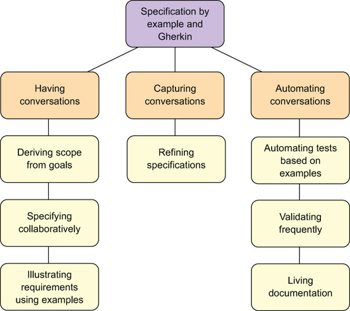

SBE on sarnane acceptance test–driven developmentile aga illustreerivate testide asemel on päris maailma näited, mitte is vlälja mõeldud
Cucumber, et kirjutada teste
| Head | Halvad |
| Selged nõuded | Arendajad ei ole harjunud ega tuttavad selle süsteemiga |
| Vigu leiab üles kiiremini kuna põhineb tdd'lt | |
| Automatiseeritud testid kuna põhined tdd'lt | Ei sobi kõikidele projektidele |